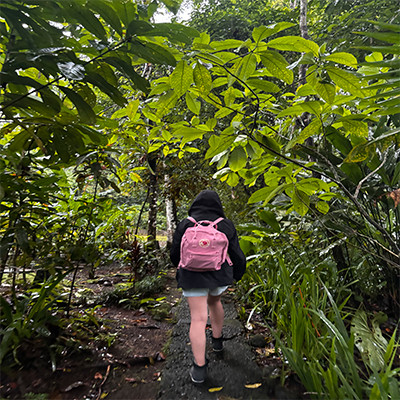

Hi! Im Emy and a fan of nature. I am currently a junior majoring in Hospitality Management with a minor in Design. Throughout the years I started to learn and appreciate the beauty of slowing down. I used to always take the route of running and wanting to be fast, however, I learned how I feel stronger and calm choosing to walk as nature surrounds me. I notice it shaped me better and absorbed all the beautiful sites/things I was missing when I would run.

What I carry